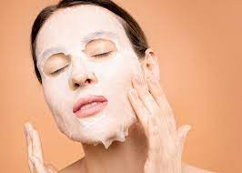

MASECZKI
Maseczki kojące sprawdzają się w pielęgnacji skóry wrażliwej i skłonnej do podrażnień. Ich zadaniem jest łagodzenie podrażnień oraz nadreaktywności skóry. Przyspieszają także regenerację i odbudowę skóry oraz wzmacniają jej naturalną barierę ochronną.
Jak stosować maseczki?
Maseczkę na twarz należy stosować zawsze na oczyszczoną skórę, dlatego zaleca się nakładanie jej wieczorem, po kąpieli, gdy pozbędziemy się już makijażu, nadmiaru sebum, wszelkich zanieczyszczeń oraz pozostałości po kremach i olejkach.